Flaksefugl
Level 2
I denne oppgaven skal vi lage vår egen versjon av spillet Flappy Bird.
Trykk på mellomromstasten for å flakse og prøv å styre mellom rørene!

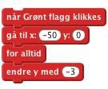
klikk det grønne flagget: starter Flakse midt på skjermen og faller mot bunnen?
Nå vil vi at Flakse skal fly oppover når du trykker mellomrom.
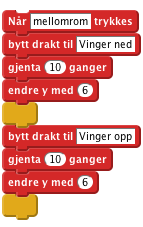
Klikk det grønne flagget: klarer du å kontrollere Flakse med mellomromstasten? La du merke til at noen ganger så flytter ikke Flakse seg når du trykker mellomrom? Det er det neste vi skal fikse.
Vi vil at Flakse skal reagere hver gang vi trykker mellomrom. Men når vi trykker mellomrom så starter to løkker etterhverandre. Hvis vi trykker mellomrom før disse to løkkene er ferdig så skjer det ikke noe. For å løse dette problemet skal vi bruke en variabel til å telle hvor mange flaks vi trenger å gjøre.
når mellomrom trykkes og legg de til siden. Vi skal bruke klossene straks.For denne figuren og kall den flaks.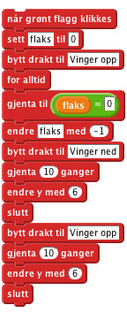
når mellomrom trykkes blokken: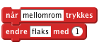
Klikk det grønne flagget: Flakser Flakse en gang for hver gang du trykker mellomrom??
Vi vil legge til noen hindringer som Flakse kan fly igjennom.
tegn ny figur knappen.Punktgrafikk klikk på Bytt til vektorgrafikk knappen.Zoom - så du kan se hele tegneområdet.Rektangel, velg en farge og klikk på Fylt rektangel knappen nederst til venstre.
Fyll farge og klikke på en av skyggemetodene i firkantene nede til venstre. Velg to varianter av samme farge: en for forgrunnen og en for bakgrunnen. Når du klikker på en firkant med fylleverktøyet får du en fin effekt.Nå skal vi få røra til å flytte seg og gjøre plasseringen tilfeldig slik at vi får en hinderløype til Flakse.
Skript.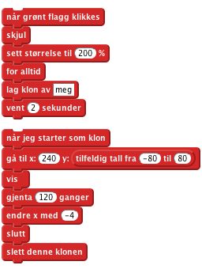
Klikk det grønne flagget: Kommer det mange rør flygende mot Flakse? Har rørene åpninger til å fly gjennom? Om du synes det er vanskelig å fly Flakse gjennom åpningene kan du endre på åpningen mellom rørene med tegneverktøyet, eller du kan lage Flakse mindre.
For at spillet skal bli vanskelig må spilleren styre Flakse gjennom åpningene mellom rørene uten å komme borti hverken rør eller kanten av skjermen. Vi skal legge til noen blokker for å merke om Flakse kræsjer.
Lyder.Velg lyd fra biblioteket.Skript fliken.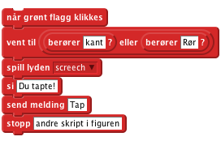
![når jeg mottar [Tap]
stopp [andre skript i figuren]](8c3691ec730214869da4158d44944dbbaf2e7d02.png)
Klikk det grønne flagget: Stopper spillet når Flakse kommer borti et rør eller kanten av brettet?
Spilleren skal score ett poeng hver gang Flakse flyr gjennom en røråpning.
Skript .for alle figurer og kall den poeng.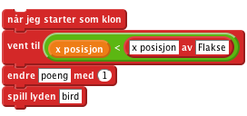
Klikk det grønne flagget: scorer du poeng når Flakse flyr forbi en åpning mellom rørene?
Nett variabel (lagret på nett) boksen. Kall variabelen Rekord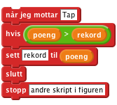
Klikk det grønne flagget: Oppdaterer rekorden seg for hver gang du setter ny rekord?
Når noe faller på grunn avtyngdekraft øker farten jo lenger fallet varer. Vi skal prøve å etterligne denne måten å falle på.
for denne figuren for Flakse og kall den løft.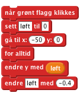
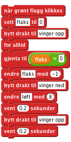
Klikk det grønne flagget: detter Flakse fortere jo lenger han detter?
Når spilleren taper skal Flakse dette ned og ut av skjermen.
send meldingen Tap blokka med send meldingen fall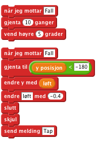
vis-blokk og sett Flakses retning når spillet starter på nytt.Klikk det grønne flagget: detter Flakse ut av skjermen når han treffer et rør? Flyr Flakse riktig vei når spillet starter igjen?
Gratulerer, du er ferdig med spillet! Hva er rekorden din?
ikke glem å dele spillet med vennene dine. Trykk på Legg ut for at andre skal få prøve!